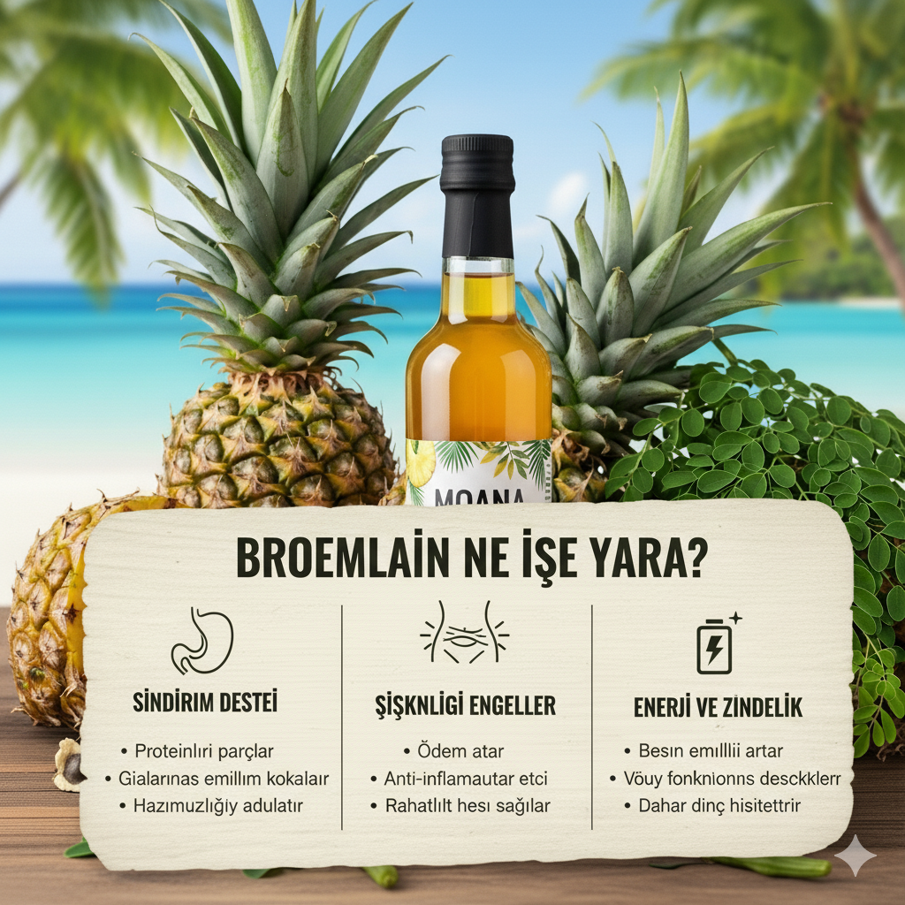
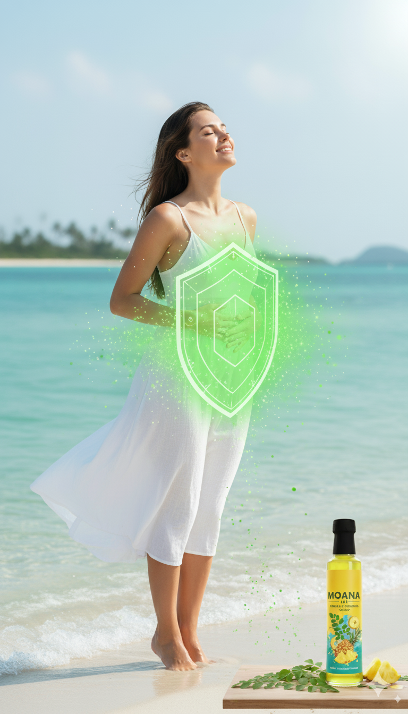

Sağlıklı Bir Başlangıç
Doğal bromelain kaynağı ananas ve moringa'nın gücüyle sindirim sisteminizi düzenleyin. Daha hafif ve konforlu hissedin.
Hafifliği Hissedin
Vücudunuzdaki fazla ödem ve rahatsız edici şikinlik hissine veda edin. Gün boyu enerjik ve zinde kalın.


Vücudunuzu Koruyun
Ürünümüz, genel bir anti-inflamatuar destek sağlayarak vücudunuzun doğal savunma mekanizmalarına yardımcı olur.
Bağışıklık Kalkanı
Ananas ve moringa'nın besleyici içeriği ile bağışıklık sisteminizi destekleyerek hastalıklara karşı daha dirençli olun.
